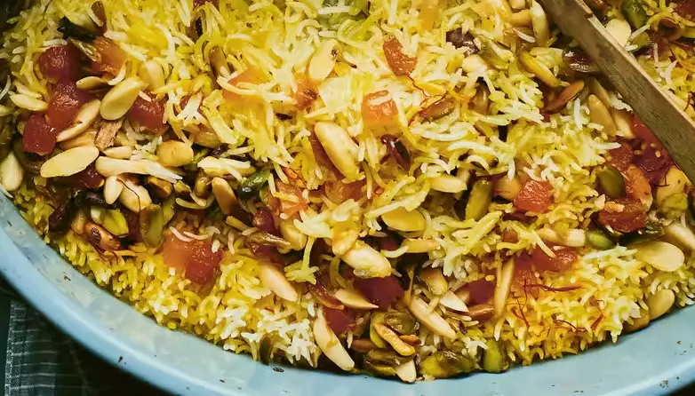

ZARDA – Sweet Rice with Saffron and Nuts

DESCRIPTION
Zarda is a traditional boiled sweet rice dish, native to the Indian subcontinent, made with saffron, milk and sugar, and flavoured with cardamoms, raisins, pistachios or almonds. The name Zarda comes from Persian word 'zard' meaning 'yellow', hence named since the food coloring added to the rice gives it a yellow color. Zarda is typically served after a meal. In the Indian subcontinent, zarda was and still remains a popular dessert on special occasions such as weddings. It is quite similar to Sholezard, a traditional Iranian dessert, and Zerde, a traditional Turkish dessert.
Often in Pakistan, instead of yellow food coloring, multiple food colorings are added so the rice grains are of multiple colors. Additionally, khoya, candied fruits (murabba) and nuts are an essential part of zarda made at auspicious occasions. There also is a popular use of raisins, and other dried fruits to dish.
Dating back to Mughal India, zarda had a variation with an addition of small fried sweetmeat pieces called 'Mutanjan'. This dish was a favourite of Emperor Shahjahan and was often made on his request. This rice dish was made for guests at special banquets.
Saffron is one of the world’s most expensive spices, but you only need a little, and infusing it in warm milk is a very effective way to bring out its flavour. The addition of nuts gives this dessert a further luxurious touch. Definitely serve with some thick or clotted cream on the side.
TIME CONSUMPTION
- Prep Time: 30 mins
- Cook Time: 30 mins
- Soaking Time for Rice: 30 mins
- Total Time: 1 hr 30 mins
RECIPE RELATIONSHIP
- Course: Dessert
- Cuisine: Indian
- Servings: 6 people
- Calories: 469kcal
- Author: Asma Khan
EQUIPMENT
- Bowls
- Large Pan
- Heavy-based Pan
- Casserole Dish
INGREDIENTS
- ½ tsp saffron strands
- 2 tbsp milk
- 250 g basmati rice
- 100 g ghee or butter (or flavorless vegetable oil), plus extra for greasing
- 6 cloves
- 8 green cardamom pods
- 40 g shelled unsalted pistachios cut into thick slivers
- 40 g unsalted blanched almonds cut into thick slivers
- 30 g dried apricots cut into small cubes
- 150 g granulated sugar
- 2 tbsp kewra (screw-pine) water or rose water
COOKING GUIDANCE
- Put the saffron in a small bowl, warm the milk to tepid and pour over the saffron strands.
- Gently wash the rice in a large bowl with cold water (not under running water as this will break the tips of the rice, which will make the rice sticky). Change the water several times until it looks clear, then soak the rice in cold water for at least 30 minutes or up to three hours. Drain the rice well in a strainer.
- Bring one-and-a-half-litres of water to the boil in a large pan. Add the rice once the water is boiling and boil until it is half done. It is hard to give an exact time for this as there are too many variables, but the way to check is to remove a single grain of rice from the hot water and squeeze it between your fingers – there should still be a hard core of slightly uncooked rice. Drain the half-cooked rice in a strainer and spread the rice thinly on a platter to cool and prevent it from continuing to cook.
- Preheat the oven to 180°C/160°C fan/gas 4.
- Heat the ghee or butter in a heavy-based pan over a medium–high heat. Add the cloves and cardamoms, followed by the pistachios, almonds and apricots. Add 250ml of cold water and the sugar and stir until the sugar dissolves.
- Butter a casserole dish and add the rice, then pour over the warm, spice-infused sugar syrup. Add the saffron-infused milk and stir gently to ensure the saffron is evenly distributed. Cover tightly with foil and bake for 15 minutes.
- Take the dish out of the oven. Gently fluff the rice, then re-cover and bake for another 10–15 minutes. Remove the foil and leave the dessert to stand for a few minutes.
- Sprinkle the kewra or rose water over the warm rice before serving.
NUTRITION
Calories: 469kcal |
Carbohydrates: 67g |
Protein: 7g |
Fat: 21g |
Saturated Fat: 9g |
Polyunsaturated Fat: 2g |
Monounsaturated Fat: 8g |
Trans Fat: 1g |
Cholesterol: 36mg |
Sodium: 115mg |
Potassium: 261mg |
Fiber: 3g |
Sugar: 29g |
Vitamin A: 623IU |
Vitamin C: 1mg |
Calcium: 59mg |
Iron: 1mg
SOURCES OF CONTENT
- The contents of description are taken from WIKIPEDIA.ORG.
- The other contents like Picture, Time Consumption, Ingredients, Cooking Guidance and Nutrition are all taken from WISELIVINGMAGAZINE.CO.UK
- The recipe is belongs to ASMA KHAN.
- She is the chef and owner of Darjeeling Express Restaurant.
- She is also the author of two cookbooks available at AMAZON.CO.UK named;
- Asma's Indian Kitchen: Home-cooked food brought to you by Darjeeling Express
- Ammu: Indian Home-Cooking To Nourish Your Soul
- Her first book was the winner in the U.K. category for food publishing in Indian cuisine in the Gourmand World Cookbook Awards.
- Asma is the first British chef to feature in Netflix's Emmy nominated Chef's Table. Her episode also received a 2020 James Beard Award nomination.
- You can get full detail of this recipe from this link, Zarda – sweet rice with saffron and nuts.